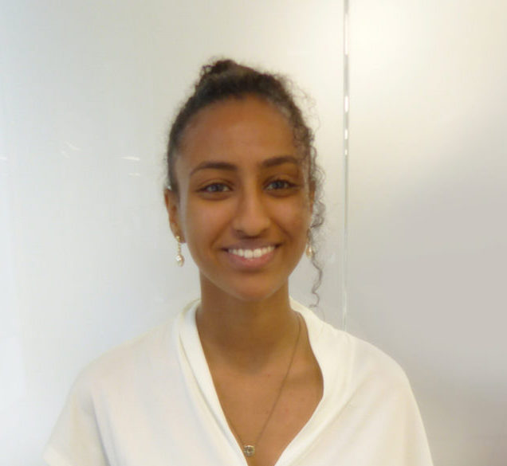

NHS Python Community Board
-

Arouba Zubair
Data Analyst - NHSX
Hi, I'm Arouba. Co-founder of the NHS Python Community. Love all things related to data, neuroscience, and biotech! I'm passionate about coding in the open and encouraging all to develop their python skills.
-
Dr Mark Bailey
Speciality Doctor in Respiratory Medicine and Clinical Informatician - GHNHSFT
Clinician-who-codes (python, C++/arduino, VBA, AutoHotKey). Member of the Faculty of Clinical Informatics. Subspecialised in sleep medicine.

Sophie Williams, PhD
Research Data Scientist - Barts Health NHS Trust
I use Python to analyse NLP-enhanced hospital data to improve outcomes in disease areas relevant to our local patient needs. I have joined NHS-Python board because communities are so useful to bring together clinical and non-clinical people with data analysis interests to build skills and share knowledge.
-

Mary Amanuel
Data Analyst - NHSX. Co-founder of the NHS Python Community.
Passionate about addressing health inequalities, open code and collaboration in the NHS, as well as encouraging staff from diverse and non-technical backgrounds to develop their programming skills.
-

Alex Cheung
Deployment manager - NHSE/I
Co-founder and chair of NHS python community with a great passion to bring innovative approaches to communities to raise profile for learning, professional development and collaboration.
-

Haris Shuaib
Head of Clinical Scientific Computing - Guy's & St Thomas' NHS Foundation Trust
I'm a Consultant Clinical Scientist and lead a multi-disciplinary team developing people, platforms and policy for digital health. We do lots of in-house development of medical devices and other applications and have benefitted greatly from working with engineers from outside our organisation. I hope the NHS Python community can really scale the use of Python in the NHS and empower NHS staff and organisations to take innovation into their own hands.
-
Jonny Pearson, PhD
Lead Data Scientist
Father of three huddersfield based data scientist with background in nuclear fusion and operational research. Always keen to hear about open source tools in the NHS, synthetic data generation, system modelling (especially discrete event simulation and agent based modelling) and forecasting.
-

Craig Shenton, PhD
Senior Data Engineer - NHSE Medical Directorate
Co-founder of the NHS Python Community, PhD Applied Mathematics and former Data Science Consultant. Python and open-source analytics enthusiast. Find me on GitHub making websites.
-
Juan Adriano, PhD
Data Scientist - Surrey and Borders Partnership NHS Foundation Trust
I am a Doctor in Health Informatics, currently working for the Analytics team at SABP. I use diverse Data Science (DS) approaches to analyse complex, significant scale and high impact operational / healthcare related problems by means of Python and the Python ecosystem. I think we should keep pushing forward the use of Python for conducting DS/Analytics projects within the NHS.
To find out more join the online community AnalystX on the FutureNHS collaboration platform.
Contact us at: pycom@nhsx.nhs.uk
Looking for support with R? Visit the the NHS-R Community